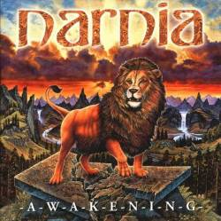
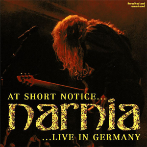

Awakening
Fecha de lanzamiento: 5 de Diciembre de 1998
- Break the Chains
- No More Shadows from the Past
- The Return of Aslan (instrumental)
- Heavenly Love
- Time of Changes
- The Awakening
- Touch from You
- Sign of the Time

Long Live The King
Fecha de lanzamiento: 1 de Julio de 1999
- Gates of Cair Paravel (Introduction)
- Living Water
- Shelter Through the Pain
- The Mission
- What You Give Is What You Get
- The Lost Son
- Long Live the King
- Dangerous Game
- Star over Bethlehem
- Shadowlands (Outro)

The great fall
Fecha de lanzamiento: 1 de Julio de 2003
- War Preludium
- The Countdown Has Begun
- Back from Hell
- No Time to Lose
- Innocent Blood
- Ground Zero
- Judgement Day
- Desert Land
- The Great Fall of Man

Desert Land
Fecha de lanzamiento: 1 de Julio de 2001
- Inner Sanctum
- The Witch and the Lion
- Falling from the Throne
- Revolution of Mother Earth
- The Light at the End of the Tunnel (instrumental)
- Angels Are Crying
- Walking the Wire
- Misty Morning (instrumental)
- Trapped in This Age

Enter the Gate
Fecha de lanzamiento: 21 de Abril de 2006
- Into This Game
- People of the Bloodred Cross
- Another World
- Show All the World
- Enter the Gate
- Take Me Home
- This is My Life
- Aiming Higher
- The Man from Nazareth
- Hymn to the North (Japanese Bonus track)

At Short Notice; Live In Germany
Fecha de lanzamiento: 1 de Julio de 2006
- Introduction
- Inner Sanctum
- The Mission
- The Countdown Has Begun
- Back From Hell
- No Time To Lose
- Long Live the King
- Living Water
- Shelter Through The Pain
- Dangerous Game
- The Awakening
- Break The Chains
- The Witch And The Lion

At Short Notice… Live In Germany
Fecha de lanzamiento: 1 de Julio de 2007
- In His Majesty's Service (Jerusalem cover)
- Into This Game
- Show All the World
- Judgement Day
- Innocent Blood
- The Countdown Has Begun (live)
- Back from Hell (live)
- Inner Sanctum
- The Witch & the Lion
- Revolution of Mother Earth
- The Light at the End of the Tunnel
- Trapped in This Age
- Sunrise (Uriah Heep cover)
- Gates of Cair Paravel
- Living Water
- The Mission
- Shelter Through the Pain
- Can't Get Enough of You
- Dangerous Game
- Long Live the King
- No More Shadows from the Past
- Heavenly Love
- Break the Chains
- Awakening (live)
- Hymn to the North
- Show All the World (Dance remix)

Course of a generation
Fecha de lanzamiento: 1 de Julio de 2007
- Sail Around the World
- When the Stars are Falling
- Curse of a Generation
- Scared
- Kings Will Come
- Rain
- Armageddon
- One Way to Freedom
- Miles Away
- Behind the Curtain

Narnia
Fecha de lanzamiento: 16 de Septiembre de 2016
- Reaching for the Top
- I Still Believe
- On The Highest Mountain
- Thank You
- One Way to the Promised Land
- Messengers
- Who Do You Follow?
- Moving On
- Set the World on Fire

We Still Believe Made in Brazil
Fecha de lanzamiento: 1 de Septiembre de 2018
- Inner Sanctum
- The Mission
- Reaching For The Top
- Shelter Through The Pain
- No More Shadows From The Past
- I Still Believe
- Messengers
- Drum Solo
- Guitar Solo
- The Awakening
- Long Live The King
- Into This Game
- Living Water

Long Live The King (20th Anniversary Edition)
Fecha de lanzamiento: 30 de Agosto de 2019
- Gates of Cair Paravel (Introduction)
- Living Water
- Shelter Through the Pain
- The Mission
- What You Give Is What You Get
- Long Live the King
- The Lost Son
- Dangerous Game
- Star over Bethlehem
- Miracle (bonus track)
- Can't Get Enough Of You (bonus track)
- Living Water (2017 version – bonus track featuring Jens Johansson)
- Shadowlands (Outro)

Soli Deo Gloria; 25 Years Compilation
Fecha de lanzamiento: 5 de Noviembre de 2021
- A Crack in the Sky
- You Are the Air That I Breathe
- Has the River Run Dry?
- MNFST
- The War That Tore the Land
- Reaching for the Top (Live in Brazil)
- I Still Believe
- On the Highest Mountain
- Thank You
- Sail Around the World
- Scared
- One Way to Freedom
- Into This Game
- People of the Blood Red Cross
- Another World
- Enter the Gate
- Back from Hell (Live in Germany)
- Inner Sanctum (Live in Brazil)
- The Witch and the Lion
- Falling from the Throne
- Revolution of Mother Earth
- Living Water (2017 Version featuring Jens Johansson)
- Shelter Through the Pain (Live in Brazil)
- The Mission
- Dangerous Game
- Miracle
- Long Live the King (Live in Brazil)
- Break the Chains
- No More Shadows from the Past (Live in Brazil)
- The Awakening (Live in Brazil)